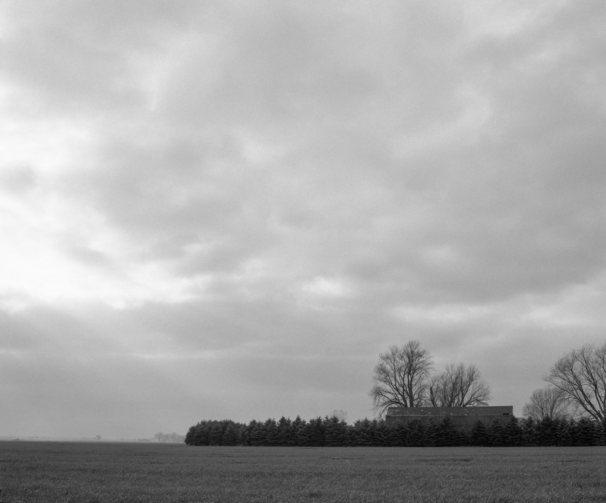
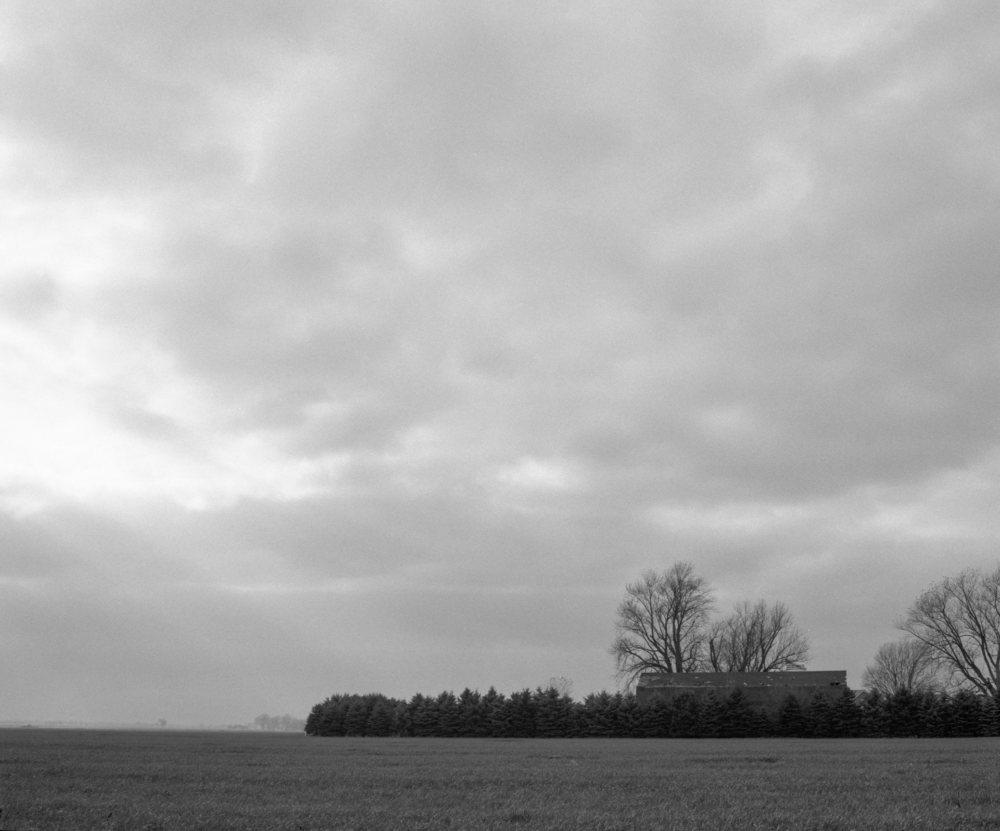

[IN PROGRESS]
Wisconsin, 35mm/120/4x5 film & digital, 2022-present.
Wisconsin is an ongoing project and photo book that explores the landscapes, people, and culture of the rural areas of my home state. Focusing on these spaces, my goal is to shed new light on their beauty and character. While also illuminating the connection between people and their environment.